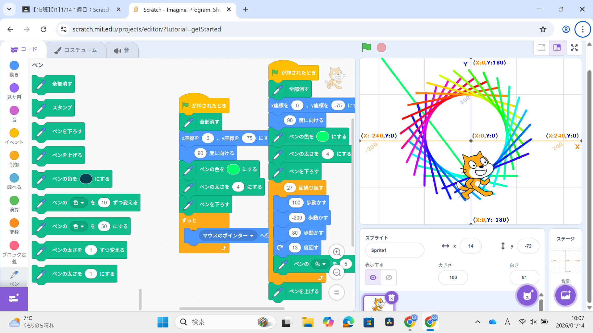
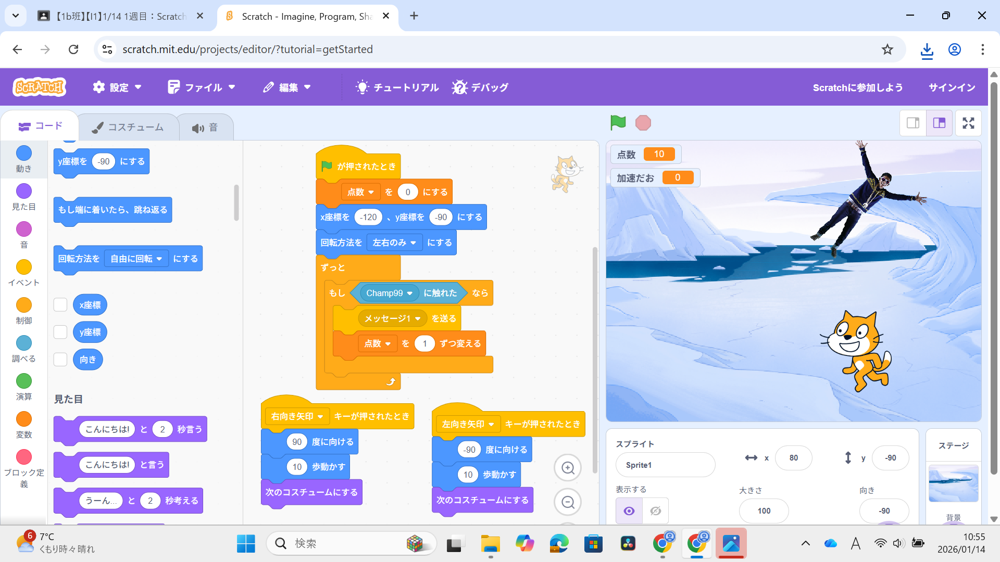

1週目のレポート ： 公大高専１年実習I-1
4班28番 中谷真土
第1週目
1-1 サイエンスアート

1.内容
旗を押したとき、猫がペンを下ろしてアートを作るプログラムを作成した。
旗を押すと(0、－75)の座標に移動し、角度を90°にし、ペンを下ろす。
猫を動かしたり、角度を変えたり、ペンの色を変えるコードを27回繰り返すプログラムである。
また、マウスポインターに猫が移動するプログラムも作成した。
2.感想
プログラムでアートを作れることに驚いた。
このプログラムで写真のようなアートを作れることは想像できなかった。
プログラミングはあまりやったことがなかったけど、簡単に作ることができて楽しかった。
1-2 ゲーム

1.内容
落ちてくる人を猫が回収してポイントを稼ぐゲームを作った。
左右の矢印キーを押すと動き、次のコスチュームに変えるブロックを使うことで歩いているように見せている。
2.感想
自分でゲームを作ったことがなかったので作ることができてうれしかった。
どうしたらゲームが面白くなるか工夫することが楽しかった。
1-3 ホームページ作成
私のホームページ
1.内容
githubにログインし、自身を紹介するホームページを作った。
index.htmlファイルに特徴や特技、趣味、嗜好などを書いた。
2026年01月14日に作成した。
2.感想
学習した内容を実践したときに自分が感じた感想を
自分で考えた文章で作成する（50文字以上．100文字程度を推奨．※生成AIを使ってはいけない）
各ページへのリンク
1週目のレポート
2週目のレポート
3週目のレポート
私のホームページ